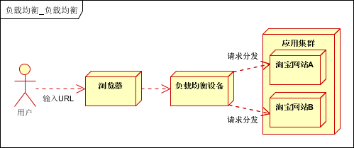
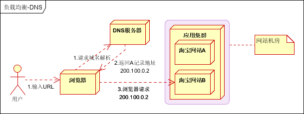
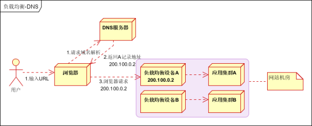
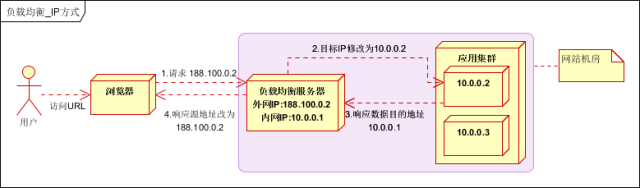
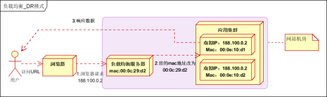
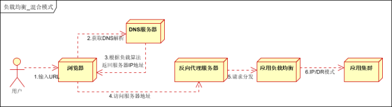
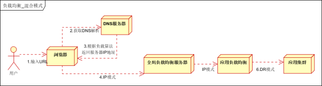

负载均衡（Load Balance），意思是将负载（工作任务，访问请求）进行平衡、分摊到多个操作单元（服务器，组件）上进行执行。是解决高性能，单点故障（高可用），扩展性（水平伸缩）的终极解决方案。
系统的扩展可分为纵向（垂直）扩展和横向（水平）扩展。纵向扩展，是从单机的角度通过增加硬件处理能力，比如CPU处理能力，内存容量，磁盘等方面，实现服务器处理能力的提升，不能满足大型分布式系统（网站），大流量，高并发，海量数据的问题。因此需要采用横向扩展的方式，通过添加机器来满足大型网站服务的处理能力。比如：一台机器不能满足，则增加两台或者多台机器，共同承担访问压力。这就是典型的集群和负载均衡架构：如下图：

应用集群：将同一应用部署到多台机器上，组成处理集群，接收负载均衡设备分发的请求，进行处理，并返回相应数据。
负载均衡设备：将用户访问的请求，根据负载均衡算法，分发到集群中的一台处理服务器。（一种把网络请求分散到一个服务器集群中的可用服务器上去的设备）
负载均衡的作用（解决的问题）：
1.解决并发压力，提高应用处理性能（增加吞吐量，加强网络处理能力）；
2.提供故障转移，实现高可用；
3.通过添加或减少服务器数量，提供网站伸缩性（扩展性）；
4.安全防护；（负载均衡设备上做一些过滤，黑白名单等处理）
根据实现技术不同，可分为DNS负载均衡，HTTP负载均衡，IP负载均衡，链路层负载均衡等。
最早的负载均衡技术，利用域名解析实现负载均衡，在DNS服务器，配置多个A记录，这些A记录对应的服务器构成集群。大型网站总是部分使用DNS解析，作为第一级负载均衡。如下图：

优点
使用简单：负载均衡工作，交给DNS服务器处理，省掉了负载均衡服务器维护的麻烦
提高性能：可以支持基于地址的域名解析，解析成距离用户最近的服务器地址，可以加快访问速度，改善性能；
缺点
可用性差：DNS解析是多级解析，新增/修改DNS后，解析时间较长；解析过程中，用户访问网站将失败；
扩展性低：DNS负载均衡的控制权在域名商那里，无法对其做更多的改善和扩展；
维护性差：也不能反映服务器的当前运行状态；支持的算法少；不能区分服务器的差异（不能根据系统与服务的状态来判断负载）
实践建议
将DNS作为第一级负载均衡，A记录对应着内部负载均衡的IP地址，通过内部负载均衡将请求分发到真实的Web服务器上。一般用于互联网公司，复杂的业务系统不合适使用。如下图：

在网络层通过修改请求目标地址进行负载均衡。
用户请求数据包，到达负载均衡服务器后，负载均衡服务器在操作系统内核进程获取网络数据包，根据负载均衡算法得到一台真实服务器地址，然后将请求目的地址修改为，获得的真实ip地址，不需要经过用户进程处理。
真实服务器处理完成后，响应数据包回到负载均衡服务器，负载均衡服务器，再将数据包源地址修改为自身的ip地址，发送给用户浏览器。如下图：

IP负载均衡，真实物理服务器返回给负载均衡服务器，存在两种方式：（1）负载均衡服务器在修改目的ip地址的同时修改源地址。将数据包源地址设为自身盘，即源地址转换（snat）。（2）将负载均衡服务器同时作为真实物理服务器集群的网关服务器。
优点：
（1）在内核进程完成数据分发，比在应用层分发性能更好；
缺点：
（2）所有请求响应都需要经过负载均衡服务器，集群最大吞吐量受限于负载均衡服务器网卡带宽；
在通信协议的数据链路层修改mac地址，进行负载均衡。
数据分发时，不修改ip地址，指修改目标mac地址，配置真实物理服务器集群所有机器虚拟ip和负载均衡服务器ip地址一致，达到不修改数据包的源地址和目标地址，进行数据分发的目的。
实际处理服务器ip和数据请求目的ip一致，不需要经过负载均衡服务器进行地址转换，可将响应数据包直接返回给用户浏览器，避免负载均衡服务器网卡带宽成为瓶颈。也称为直接路由模式（DR模式）。如下图：

优点：性能好；
缺点：配置复杂；
实践建议：DR模式是目前使用最广泛的一种负载均衡方式。
由于多个服务器群内硬件设备、各自的规模、提供的服务等的差异，可以考虑给每个服务器群采用最合适的负载均衡方式，然后又在这多个服务器群间再一次负载均衡或群集起来以一个整体向外界提供服务（即把这多个服务器群当做一个新的服务器群），从而达到最佳的性能。将这种方式称之为混合型负载均衡。
此种方式有时也用于单台均衡设备的性能不能满足大量连接请求的情况下。是目前大型互联网公司，普遍使用的方式。
方式一，如下图：

以上模式适合有动静分离的场景，反向代理服务器（集群）可以起到缓存和动态请求分发的作用，当时静态资源缓存在代理服务器时，则直接返回到浏览器。如果动态页面则请求后面的应用负载均衡（应用集群）。
方式二，如下图：

以上模式，适合动态请求场景。
因混合模式，可以根据具体场景，灵活搭配各种方式，以上两种方式仅供参考。